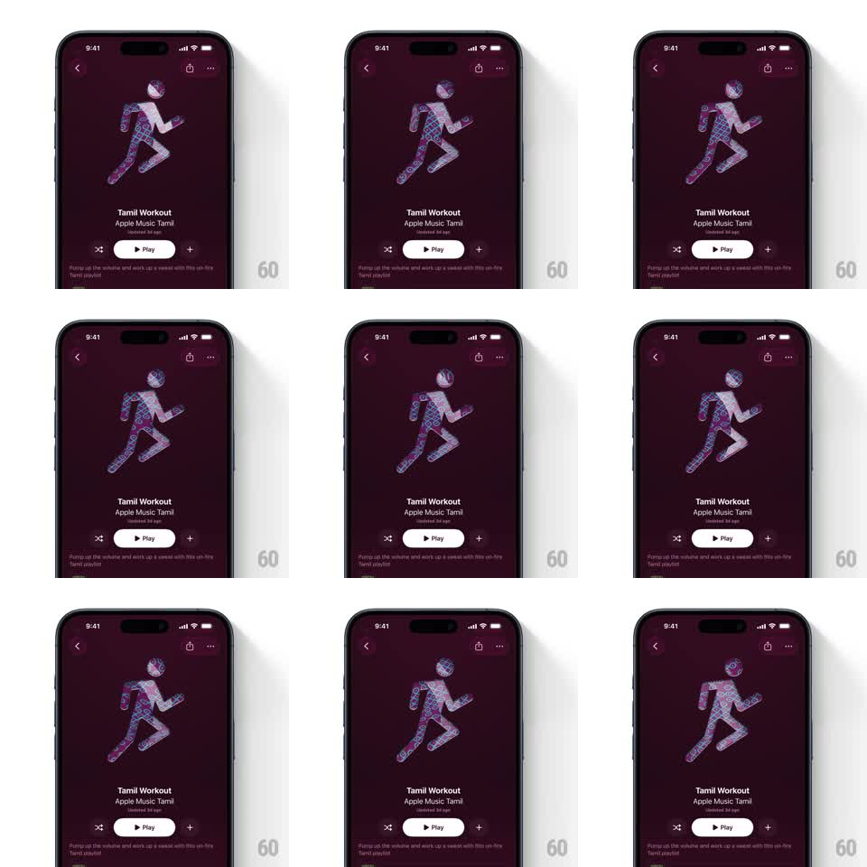

Media
Frame-by-frame

Rebuild this animation 1:1: Apple Music's animated playlist cover - a flat running-figure silhouette filled with a living illustrated pattern (paisley-like swirls in pink/blue/green) that slowly flows and shimmers inside the silhouette, over a deep maroon background on the playlist screen.

Rebuild this animation 1:1: Apple Music's animated playlist cover - a flat running-figure silhouette filled with a living illustrated pattern (paisley-like swirls in pink/blue/green) that slowly flows and shimmers inside the silhouette, over a deep maroon background on the playlist screen. ## Integration Integration: stack-agnostic spec - springs given as stiffness/damping, timed motions as duration + curve; map every value to your framework and animation library of choice. ## Scene Playlist detail screen: large square cover art (dark maroon field, running man silhouette center) above title "Tamil Workout", curator line, Play button and description. Standard Apple Music chrome around it. ## Motion spec Pattern: contained texture flow, continuous loop. - The silhouette is a mask: inside it, an illustrated pattern field drifts slowly (translate ~40px over 12s, looping) with layered swirls moving at two speeds (parallax: back layer 12s, front swirls 8s). - Subtle hue shimmer on the pattern (+-8deg hue rotation over 10s) and occasional brighter swirls pulsing (opacity +0.15, 3s). - The silhouette shape itself never animates; the maroon field and all UI are static. - Cover is square with a soft shadow; slight 3D tilt on scroll (rotateX up to 4deg) is the only interactive motion. ## Calibration - Movement must be slow enough to feel like the art is breathing - fast flow reads as a loading spinner. - Mask edges are crisp: the pattern never bleeds outside the figure. ## Reduced motion Static pattern fill. ## Don't miss - Two parallax speeds inside the mask are what make it feel illustrated, not a video loop. - Pattern colors stay in the playlist's palette (pink/blue/green on maroon) - don't add new hues.